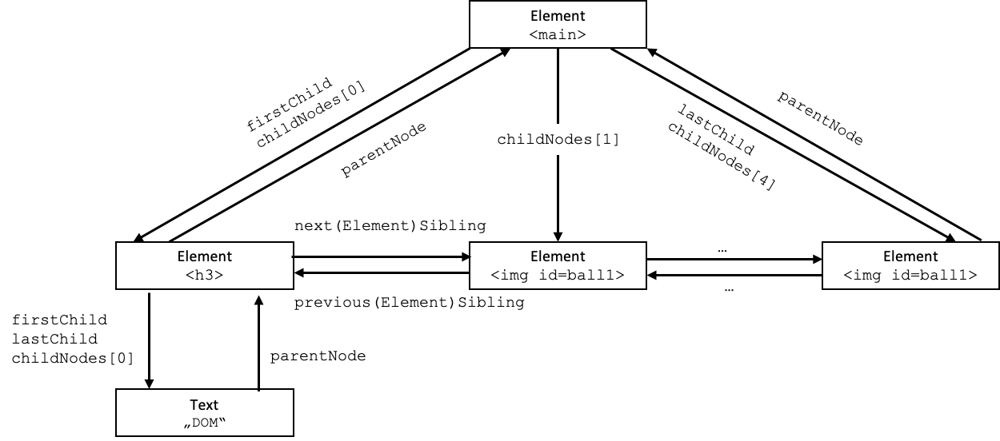

JavaScript¶
JavaScript wurde 1995 von Brendan Eich entwickelt. Er arbeitete damals bei Netscape und entwickelte mit dem damals sogenannten LiveScript eine Skriptsprache für den damaligen Netscape-Browser. Ein damaliger Browser "verstand" HTML und CSS. HTML sah für Nutzerinteraktionen nur das Klicken auf Hyperlinks vor. Andere Nutzerinteraktionen waren nicht vorgesehen. Mithilfe von JavaScript wurde eine Schnittstelle geschaffen, um durch Nutzerinteraktionen den HTML-Code zu manipulieren, ohne dass ein weiteres Nachladen vom Webserver notwendig wurde. Mit der Einführung von JavaScript wurden die Fähigkeiten von Browsern erweiteret, indem nun nicht mehr nur HTML und CSS interpretiert wurde, sondern auch JavaScript - alles Client-seitig, also durch den Browser selbst.
JavaScript ist eine sogenannte Skriptsprache, d.h. der Quellcode wird nicht compiliert und dann der übersetzte Byte- oder Maschinencode ausgeführt, sondern der Quellcode wird durch einen Interpreter interpretiert. Allerdings wird für Optimierungen JavaScript - insbesondere serverseitig in Node.js - durch sogenannte Engines doch in Maschinencode übersetzt, welcher ausgeführt wird. Die bekannteste dieser Engines ist die Google-Engine V8. Die Technologie der Compilierung wird als Just-in-time-Kompilierung (JIT) bezeichnet.
JavaScript kennt (im Gegensatz zu TypeScript) keine Klassen. Das Objektmodell von JavaScript basiert auf Prototypen. Eigenschaften und Methoden können zur Laufzeit den Objekten hinzugefügt werden. Neben diesem dynamischen Objektmodell ist auch die Typisierung in JavaScript dynamisch. Der Typ einer Variable hängt vom Wert ab. Mit dem Wert kann sich auch der Typ der Variable ändern.
Client-seitig haben HTML, CSS und JavaScript folgende Bedeutung (und wir sollten auch auf eine solche strikte Trennung achten):
- HTML für die Inhalte,
- CSS für das Layout,
- JavaScript für das interaktive Verhalten
unserer Webseite.
JavaScript in unseren Webseiten¶
Zunächst überlegen wir uns, wie wir das auch schon für CSS getan hatten, wo wir den JavaScript-Code in unseren Webseiten einfügen können. Prinzipiell wird JavaScript-Code in einem HTML-Dokument innerhalb eines <script></script>-Elementes eingefügt. Im Gegensatz zu CSS (wo wir die Definitionen innerhalb des <style></style>-Elementes angegeben haben, welches immer im <head> positioniert wird), ist es egal, ob das <script>-Element im <head>oder <body> angelegt wird. Sie können innerhalb eines HTML-Dokumentes auch mehrere <script>-Elemente haben und Sie können dann auch sowohl im <head> als auch im <body> positioniert sein. Wie bei CSS, ist es auch für JavaScript üblich, den Code in externe (.js)-Dateien auszulagern und diese dann in das HTML-Dokument einzubinden. Dies geschieht aber nicht über ein <link>-Element, sondern ebenfalls über das <script>-Element. Das folgende Beispiel zeigt die Verwendung des <script>-Eelementes zum Einbinden von JavaScript:
<!DOCTYPE html>
<html lang="en">
<head>
<meta charset="UTF-8">
<title>DOM</title>
<script>
function myFunction1() {
document.getElementById("demo1").innerHTML = "Hallo FIW!";
}
</script>
</head>
<body>
<script src="myScript.js"></script>
<h1>Überschrift</h1>
<button type="button" onclick="myFunction1()">Klick mich</button>
<div id="demo1"></div>
<input id="input1" type="text" placeholder="Gibt etwas ein" onkeyup="myFunction2()"/>
<div id="demo2"></div>
<script>
function myFunction2() {
document.getElementById("demo2").innerHTML = document.getElementById("input1").value;
}
</script>
</body>
</html>
Ein gutes Vorgehen ist es, JavaScript am Ende des <body>-Elementes einzubinden, damit die Seite zunächst dargestellt wird und erst dann der JavaScript-Code geladen wird. Das laden des JavaScript-Codes würde ansonsten die Darstellung der Webseite verzögern.
Document Object Model (DOM)¶
Wir betrachten JavaScript zunächst nur aus client-seitiger Sicht, d.h. für die Verwendung im Browser. Der Browser stellt HTML dar, welches durch CSS in ein ansprechendes Layout gestzt wurde. Es stellt sich die Frage, inwieweit JavaScript überhaupt noch eine Erweiterung dieses Konzeptes darstellen kann. Die Antwort liegt darin, dass ohne JavaScript eine Webseite im Browser völlig statisch ist, d.h. es gibt nur eine Möglichkeit, neue Inhalte zu laden oder überhaupt etwas an der Webseite zu ändern und das ist, diese neuen Inhalte oder Änderungen von einem Webserver zu laden. Jede Nutzerinteraktion führt so immer zu einem Request-Response-Prozess mit einem Webserver. Das wird durch JavaScript geändert. Auf Nutzerinteraktionen kann durch JavaScript lokal, d.h. auf dem Client bleibend, reagiert werden. Die Schnittstelle zwischen JavaScript und HTML/CSS ist das sogenannte Document Objekct Model (DOM). Das DOM stellt ein Interface (eine Schnittstelle) dar, um HTML-Dokumente "manipulieren" zu können. Damit ist hauptsächlich gemeint, dass HTML-Elemente eines HTML-Dokumentes
- geändert,
- hinzugefügt und
- gelöscht
werden können. Zum Ändern der HTML-Elemente zählen
- das Ändern des Inhalts der Elemente und
- das Ändern von Attributen und deren Werten.
Die Idee ist, dass ein HTML-Dokument als ein Baum aufgefasst wird, dessen hierarchische Beziehungen durch das HTML-Dokument (und dessen hierarchischer Struktur) vorgegeben werden und in dem alle HTML-Elemente, alle Attribute und alle Inhalte als Objekte angesehen werden.
Wir schauen uns dazu ein einfaches Beispiel an:
<!DOCTYPE html>
<html lang="en">
<head>
<meta charset="UTF-8">
<title>DOM</title>
</head>
<body>
<div class="container">
<h1>Überschrift</h1>
<ul>
<li>
<a href="http://www.htw-berlin.de">HTW Berlin</a>
<a href="http://fiw.htw-berlin.de">FIW</a>
</li>
</ul>
</div>
</body>
</html>
Ein HTML-Dokument besteht aus HTML-Elementen, welche Attribute haben können und Inhalte. Im obigen Beispiel hat z.B. das <meta>-Element im <head> ein Attribut, nämlich charset. Der Wert dieses Attributes ist ein Text, nämlich UTF-8. Der Inhalt eines <a>-Elementes ist auch ein Text. Im obigen Beispiel haben wir zwei <a>-Elemente. Das eine hat den Inhalt (Text) HTW Berlin und das andere FIW. Wir können somit zwischen drei Arten von "Objekten" in einem HTML-Dokument unterscheiden:
- Elemente
- Attribute
- Texte
Wenn wir diese Artefakte tatsächlich als Objekte auffassen und außerdem die hierarchische Beziehung zwischen diesen Objekten berücksichtigen, dann lässt sich ein Baum aufspannen, der aus solchen Objekten besteht. Für obiges Beispiel sieht der Baum dann so aus:

Wir interpretieren die Objekte also als Knoten (Node) eines Baumes. Einen solchen Baum, der ein HTML-Dokument eindeutig repräsentiert, nennen wir Document Object Model (DOM) (auch HTML-DOM). Ein solcher DOM ist der Ausgangspunkt für die Manipulation des HTML-Dokumentes, denn JavaScript ist in der Lage, jeden beliebigen Knoten innerhalb dieses Baumes anzusprechen und bspw. zu ändern oder zu löschen. Außerdem kann auch jede beliebige Position eindeutig bestimmt werden, um z.B. ein Element hinzuzufügen. Wir schauen uns im Folgenden an, welche Funktionen JavaScript zur Verfügung stehen, um Positionen in diesem Baum eindeutig zu lokalisieren.
DOM-Funktionen (Lokalisation von Elementen)¶
Ausgangspunkt (die Wurzel) eines jeden HTML-DOM ist document (siehe obige Abbildung). Von document aus können wir uns beliebig durch den Baum bewegen. Die wohl meist verwendete Funktion zur Lokalisation eines Elementes im DOM ist getElementById(). In unserem obigen Beispiel haben wir nur ein Element mit einer id (einem id-Attribut) und das ist <ul>. Wir könnten gezielt nach diesem Element fragen:
document.getElementById('ul1')
und erhalten als Rückgabe das Element mit der id="ul1", also das <ul>-Element (welches wir z.B. in einer Variable speichern könnten). Weitere Funktionen zur Lokalisation von Elementen sind
document.getElementsByTagName(name)
document.getElementsByClassName(name)
Beide Funktionen liefern uns jeweils ein Array von Elementen zurück. Die Funktion document.getElementsByTagName(name) gibt ein Array von Elementen aus dem document zurück, die den Tag name haben, also z.B. alle <p>-Elemente, wenn document.getElementsByTagName('p') aufgerufen wird. Die Funktion document.getElementsByClassName(name) gibt ein Array von Elementen aus dem document zurück, die der Klasse name zugeordnet sind, also z.B. alle Elemente mit der Klasse form-group, wenn document.getElementsByClassName('form-group') aufgerufen wird. Mit diesen Funktionen kann man Elemente mitten im DOM lokalisieren. Daneben gibt es noch weitere Funktionen, die jeweils von einem solchen Element ausgehend "benachbarte" Knoten lokalisieren. Betrachten wir z.B. diesen Ausschnitt aus einem HTML-Code:
<main id="main">
<h3 id="headline">DOM</h3>
<img id="ball1" src="ball.png" />
<img id="ball2" src="ball.png" />
<img id="ball3" src="ball.png" />
<img id="ball4" src="ball.png" />
</main>
Der dazugehörige DOM (vereinfacht) ist in der folgenden Abbildung dargestellt sowie die Funktionen, mit denen die umgebenden Elemente lokalisiert werden können:

Für die Funktionen getElementById() und getElementsByTagName() betrachten wir ein erstes einfaches Beispiel:
In dem obigen JSFiddle können Sie die Wirkungsweise ausprobieren. Wir zeigen hier aber nochmal den vollständigen Code, damit Sie ihn sich kopieren und wir ihn besser erläutern können:
1 2 3 4 5 6 7 8 9 10 11 12 13 14 15 16 17 18 19 20 21 22 23 24 25 26 27 28 29 30 31 32 33 34 | |
Den <head> können wir ignorieren, auch das <style>-Element darin. Wichtig sind:
- wir haben 2 leere
<div>-Elemente mit den Idsid="demo1"undid="demo2"(Zeilen16und18) - wir haben einen
<button>mit dem Attributonclick. Dieses Attribut bindet einen Ereignis-Listener an den Button. Wird dasClick-Ereignis ausgelöst, wird die JavaScript-FunktionmyFunction1()aufgerufen (Zeile15) - die JavaScript-Funktion
myFunction1()ist im<script>-Element definiert (Zeilen20-22). Diese Funktion lokalisiert das Element mit derid"demo1"und weist ihm einen neuen HTML-Inhalt zu, nämlich"Hallo FIW!" - wir haben außerdem ein einzeiliges Eingabefeld mit der Id
id="input1"(Zeile17). Diesem Eingabefeld ist außerdem das Attributonkeyupzugeordnet. Dieses Attribut meldet sich bei einem Ereignis an, das ausgelöst wird, wenn innerhalb des Eingabefeldes eine Taste wieder losgelassen wird - es wird dann dasKeyUp-Ereignis ausgelöst. Durch das Auslösen dieses Ereignisses wird die JavaScript-FunktionmyFunction2()aufgerufen. - die JavaScript-Funktion
myFunction2()ist im<script>-Element definiert (Zeilen20-22). Diese Funktion lokalisiert das Element mit derid"demo2"und weist ihm einen neuen HTML-Inhalt zu, nämlich den Wert (value), der in das Eingabefeld mit derid="input1"eingegeben wurde (Zeilen24-26) - der Überschrift
<h1>(Zeile14) wurde das Attributonmouseoverzugeordnet. Damit wird dasMouseOver-Ereignis abgefragt. Wird die Maus über die Überschrift bewegt, wird dieses Ereignis ausgelöst und die FunktionchangeColor()aufgerufen - diese Funktion lokalisiert zunächst alle Elemente mit dem Tag
h1und speichert sie in das Arrayh1arr(Zeile29). Unsere Überschrift ist die erste (und einzige) Überschrift<h1>im Dokument. Wir greifen deshalb mit dem Index0auf dieses Element imh1arr-Array zu und ändern die Schriftfarbe auf"red"(Zeile30)
Dieses erste Beispiel zeigt mehrere interssante Punkte:
- neben den Funktionen zur Lokalisation von Elemeneten gibt es auch
- Ereignisse, an die man sich anmelden und auf die reagiert werden kann und
- es gibt Funktionen, die den Inhalt und den Style von Elementen ändern
Wir schauen uns zunächst Ereignisse an, auf die reagiert werden kann.
HTML-Ereignisse¶
HTML-Ereignisse "passieren" für HTML-Elemente in den allermeisten Fällen durch Nutzerinteraktionen (Maustaste drücken, Fenster vergrößern, Tatstatureingabe etc.). Mit JavaScript können wir auf diese Ereignisse reagieren. Eine einfache Form, ein HTML-Element an ein solches Ereignis anzumelden (so dass darauf reagiert werden kann), ist über Attribute. Angenommen ein solches Ereignis heißt Event, dann heißt das Attribut onEvent (es kann auch alles klein geschrieben werden). Die generelle Syntax ist wie folgt:
<element onEvent="JavaScript-Code" />
Der JavaScript-Code muss nicht zwingend der Aufruf einer JavaScript-Funktion, sondern kann auch eine direkte JavaScript-Anweisung sein.
Hier eine Liste der üblichsten HTML-Ereignisse. Die Bedeutung ist aus den Namen selbsterklärend, deshalb werden die meisten Ereignisse hier nicht weiter beschrieben:
- Mausereignisse (MouseEvent):
mousedown,mouseup,click,dblclick,mousemove,mouseover,mousewheel,mouseout,contextmenu - Tastaturereignisse (KeyboardEvent):
keydown,keypress,keyup - Formularereignisse:
focus,blur,change,input,submit - Fensterereignisse:
scroll,resize,hashchange,load,unload
Wir zeigen einige Beispiele:
In diesem Beispiel werden die Ereignisse focus, blur und input behandelt. Um das blur-Ereignis auszulösen, muss das <input>-Element den Focus verlieren.
In diesem Beispiel wird das change-Ereignis behandelt. Der Inhalt des Absatzes <p> mit der id="radio" wird bei jedem change-Event erweitert. Es wird also nicht innerHTML völlig neu gesetzt, sondern mithilfe von += wird der entsprechende String angehängt. Das soll insbesondere zeigen, dass das change-Ereignisses wirklich nur ausgelöst wird, wenn der Wert wechselt. Beachten Sie auch, dass getElementsByName() verwendet wird. Den Radiobuttons wurde jeweils name="colors" zugewiesen. Sie bilden damit auch eine Radiobutton-Group (es kann immer nur ein Radiobutton daraus ausgewählt werden).
In diesem Beispiel werden das mouseover- und das mouseout-Event behandelt. Beachten Sie auch die Übergabe von this an die JavaScript-Funktionen. Damit wird das <div>-Element übergeben. Wir müssen es innerhalb der Funktionen deshalb nicht mehr explizit mit getElementById() oder ähnliches holen.
In diesem Beispiel wird JavaScript nicht als Funktion, sondern direkt in den Ereignis-Attributen aufgerufen.
Noch ein einfaches Beispiel mit den Ereignissen mousedown, mouseup, mouseenter und mouseleave.
Noch ein letztes Beispiel, das wir nicht in JSFiddle zeigen, da es daraum geht, die Größe des Browsers zu ändern (Ereignis resize - die JavaScript-Funktion heißt auch resize(), aber dieser Name ist frei gewählt):
<!DOCTYPE html>
<html lang="en">
<head>
<meta charset="UTF-8">
<title>Arrays</title>
</head>
<body onresize="resize()">
<h2>Größe des Browserfensters ändern!</h2>
<p id="demo"></p>
<script>
function resize() {
var w = window.outerWidth;
var h = window.outerHeight;
var txt = "Fenstergröße: Breite=" + w + ", Höhe=" + h;
document.getElementById("demo").innerHTML = txt;
}
</script>
</body>
</html>
Wir haben uns nun einige Beispiele angesehen, wie wir HTML-Elemente ändern können. Prinzipiell geht es mit den Eigenschaften:
node.innerHTML =- Inhalt eines Elements ändernnode.attribute =- Attribut eines Elements ändernnode.style.property=- Style/Formatierung ändernnode.classList.add()- CSS-Klassen zum Element hinzufügennode.classList.remove()- CSS-Klassen vom Element entfernen
Elemente hinzufügen und löschen¶
Nun wollen wir den DOM insofern manipulieren, als dass wir zunächst Objekte hinzufügen. Die wichtigsten Funktionen dafür sind:
document.createElement('tag')- Element erzeugendocument.createTextNode("text")- Textelement erzeugennode.appendChild(childNode)- ElementchildNodedem Knotennodeals direktes (letztes) Kind hinzufügennode.removeChild(childNode)- KindchildNodedes Elementesnodelöschennode.replaceChild(newNode, oldNode)- KindoldNodedes KnotensnodedurchnewNodeersetzennode.insertBefore(newNode, oldNode)- KindnewNodedes Knotensnodevor das KindoldNodedes Knotensnodeeinfügen
Create¶
Wir betrachten wieder ein einfaches Beispiel:
Im HTML-Code sehen wir ein <input>-Element und eine Liste <ul>, die bereits 2 Listitems <li> enthält. Dem <input>-Element wurde ein change-Listener hinzugefügt. Sobald sich der Wert in dem <input>-Element geändert hat, wird dieses Ereignis ausgelöst und die Funktion addItem() aufgerufen. Dieser Funktion wird das <input>-Element als Parameter übergeben. In dieser Funktion wird zuerst ein Textknoten erzeugt (let textNode = document.createTextNode(text);) Der text ist der Wert value des <input>-Elementes. Außerdem wird ein <li>-Knoten (Objekt) erzeugt (let liNode = document.createElement('li');). An diesen <li>-Knoten wird der Textknoten angehängt (liNode.appendChild(textNode);). Danach wird an die <ul>-Liste der <li>-Knoten (mit dem Textknoten) angehängt (ulNode.appendChild(liNode);). Das neue List-item erscheint sofort als letztes Kind in der Liste.
Im folgenden Beispiel passiert das gleiche, nur wird das neu erzeugte List-Item nicht hinten an die Liste angehängt, sondern vorne eingefügt:
Tatsächlich ändert sich dafür nur die letzte Anweisung in der Funktion. Aus ulNode.appendChild(liNode); wird ulNode.insertBefore(liNode, ulNode.childNodes[0]);. Mit ulNode.childNodes[0] greifen wir auf das erste Kind des ulNode zu. Das hätten wir auch durch ulNode.firstChild haben können.
Clone¶
Eine weitere Möglichkeit, ein Element zu erzeugen, ist durch clonen eines anderen Knotens (Elementes). Der Vorteil des Clonens besteht darin, dass ein gesamter Unterbaum eines Elementes mitkopiert werden kann. Die Syntax für das Clonen eines Knotens node ist nod.cloneNode(deep). Wenn deep true ist, werden auch alle Kindelemente geklont, wenn false, dann nur das Element selbst.
1 2 3 4 5 6 7 8 9 10 11 12 13 14 15 16 17 18 19 20 21 22 | |
Im obigen Beispiel verwenden wir Bootstrap und für das <img>-Element einige Bootstrap-Klassen (hauptsächlich, damit es in der Mitte ist). Wenn wir auf das Bild Doppelklicken (dblclick), wird die Funktion cloneFunc() aufgerufen, der wir das img-Objekt übergeben. In der Funktion clonen wir das Bild (hier ist es egal, ob deep clone oder nicht, da das img-Element keine Kindknoten hat). Der Clone wird dem div-Element als Kind hinzugefügt. Durch jeden Doppelklick auf das Bild wird ein weiterer Clone dem <div>-Element hinzugefügt.
addEventListener¶
Eigentlich ist die Verwendung der Attribute onEvent nicht optimal, da die Trennung zwischen HTML und JavaScript nicht groß genug ist. Wir erinnern uns, wir wollen eine Trennung in die Zuständigkeiten:
- HTML für den Inhalt,
- CSS für das Layout und
- JavaScript für das Verhalten.
Besser ist es, die Event-Listener ebenfalls durch JavaScript hinzuzufügen und nicht durch HTML-Attribute. Wir erweitern unser obiges Clone-Beispiel zunächst wie folgt (hinzugekommener Code hervorgehoben):
1 2 3 4 5 6 7 8 9 10 11 12 13 14 15 16 17 18 19 20 21 22 23 24 25 26 27 28 29 30 31 32 | |
In Zeile 17 melden wir unseren geklonten Knoten an den Event-Listener für das click-Ereignis an. Wird auf das Bild geklickt, dann wird die Funktion removeFunc() aufgerufen. Beachten Sie, dass der erste Parameter der addEventListener()-Funktion das Ereignis click ist (und nicht das HTML-Attribut onClick) und dass der zweite Parameter die Referenz auf die Funktion removeFunc ist, nicht der Aufruf der Funktion. Würden wir dort anstelle von removeFunc removeFunc() schreiben, entspräche das dem Aufruf der Funktion und diese würde bei Aufruf der Funktion addEventListener() sofort ausgeführt.
Beachten Sie außerdem, dass bei der Funktionsdefinition von removeFunc() das ausgelöste Event event als Parameter übergeben wird. Dies passiert automatisch (also immer). Wenn wir den Parameter benennen, dann können wir auf dieses Ereignis zugreifen. Das machen wir auch, nämlich in Zeile 24, wo wir das target des Events abfragen, also das das Ereignis auslösende Element (unser jeweiliges <img>).
Die console.log()-Aufrufe sind jeweils nur zum Debuggen bzw. Inspizieren. Es gibt zwei JavaScript-Funktionen zum Löschen eines Elementes:
parent.removeChild(child)- das Elternelementparentruft die Funktion auf und löscht das übergebene Kindchildnode.remove()- ein Knoten (Element) ruft für sich selbst dieremove()-Funktion auf und löscht sich also selbst
Wir haben im obigen Abschnitt die erste Variante gewählt, um zu zeigen, wie der Elternknoten ermittelt werden kann. Man hätte aber auch auf Zeile 26 verzeichten und in Zeile 28 einfach obj.remove() schreiben können.
Beispiel vollständig mit JavaScript erzeugt¶
Das soeben gezeigte Beispiel soll nun exemplarisch vollständig durch JavaScript erzeugt werden. Wir verwenden genau ein Event-Attribut, nämlich onload, das wir dem body zuweisen. Das load-Event wird aufgerufen, sobald die Seite vollständig geladen ist. Ist die (leere) Seite vollständig geladen, wird die Funktion createAllElements() aufgerufen:
1 2 3 4 5 6 7 8 9 10 11 12 13 14 15 16 17 18 19 20 21 22 23 24 25 26 27 28 29 30 31 32 33 34 35 36 37 38 39 40 41 42 43 44 45 46 47 48 49 | |
Hervorgehoben sind wieder die Zeilen, in dennen sich etwas geändert hat.
- Zeile
10: Der<body>enthält nun nur noch ein<script>-Element. Ansonsten keine weiteren HTML-Elemente. - Zeile
12: Der FunktioncloneFunc()kann nun nicht mehr dasimg-Objekt selbst übergeben werden (da wir inaddEventListener()nur die Referenz auf die Funktion übergeben). Deswegen verwenden wir auch hier wieder das automatisch übergebeneeventund ermitteln dastargetdes ausgelösten Ereignisses (Zeile14). - Zeilen
31-46: Die FunktioncreateAllElements()erzeugt zunächst einimg-Knoten mit allen erforderlichen Attributen. Außerdem wird dieser Knoten auch noch an dasdblclick-Ereignis angemeldet und die Referenz auf die FunktioncloneFuncals Event-Handler übergeben. In Zeile44wird dieserimg-Knoten dem<body>hinzugefügt, und zwar vor dem<script>-Element. Außerdem wird noch unser<div>mit derid="div1"erzeugt und ebenfalls vor dem<script>-Element (und hinter das<img>-Element) eingefügt.
Es entsteht die exakt gleiche Webseite wie in dem Beispiel davor (siehe Beispiel aus addEventListener).
JavaScript - Sprachelemente¶
var, let und const¶
Mithilfe der Schlüsselwörter var, let und const können in JavaScript Variablen deklariert werden. Wenn Sie eine Variable mit var deklarieren, dann ist diese Variable innerhalb der gesamten Funktion, in der Sie die Variable deklarieren, gültig. Dagegen hat let nur eine Blockgültigkeit, d.h. eine mit let deklarierte Variable ist nur in dem Anweisungsblock gültig, in dem sie deklariert wurde. Eine mit let deklarierte Variable verhält sich also wie eine in Java deklarierte Variable. const wird zur Deklaration von Konstanten verwendet. Es ist zu bachten: Falls es sich bei der mit const deklarierten Konstante um eine Referenzvariable handelt (also auf ein Objekt oder Array zeigt), dann kann diese Variable ihre Referenz zwar nicht mehr ändern, das jeweilige Objekt, auf das die Variable (konstant) zeigt, kann sich aber schon ändern.
Globale Variablen, also Variablen, die von allen Funktionen geteilt werden (in allen Funktionen genutzt werden können), werden außerhalb der Funktionen deklariert. Man sollte nur sehr selten globale Variablen einsetzen, da sie in allen anderen Funktionen (auch externen) überschrieben werden können. Blöderweise ist eine Variable auch dann global, wenn sie ohne eines der genannten Schlüsselwörter (var, let und const ) innerhalb einer Funktion "deklariert" wurde. Das geschieht meistens durch eine Wertzuweisung in der Annahme, dass die Variable bereits deklariert wurde. Eine solche unbeabsichtigte Erstellung einer globalen Variable sollte vermieden werden - die absichtliche erst recht. Wenn globale Variable, dann die Deklaration außerhalb aller Funktionen.
Objekte¶
Objekte in JavaScript werden in JavaScript Object Notation beschrieben. Wir werden darauf noch genauer eingehen, zeigen hier aber schonmal ein einfaches Beispiel zur Einführung:
let person={vorname:"Maria", nachname: "Musterfrau"};
Es wurde eine person definiert mit 2 Feldern vorname und nachname und diesen Feldern wurden Werte zugewiesen. Der Zugriff auf die Felder erfolgt mittels Punkt-Notation, also person.vorname und person.nachname.
- Sie können die Werte auch einfach überschreiben, z.B.
person.nachname = "Schmidt". - Sie können das Objekt auch um weitere Eigenschaften erweitern, z.B.
person.alter = 42.
Neben der üblichen Punktnotation ist auch zu erwähnen, dass die Eigenschaften auch Schlüssel eines assoziativen Arrays sind, d.h. Sie können auf die Werte auch wie folgt zugreifen:
person["vorname"] // Maria
person["nachname"] // Schmidt
person["alter"] // 42
Mithilfe von delete können Eigenschaften gelöscht werden, z.B. delete person.alter;. Ab dann ist person.alter undefined.
Objekteigenschaften können auch Funktionen sein, z.B.
person.name=function(){ return this.vorname + " " + this.nachname };
Der Aufruf erfolgt dann über person.name();
Arrays¶
Arrays in JavaScript werden fast genauso behandelt wie in Java. Hier ein Beispiel:
1 2 3 4 5 6 7 8 9 10 11 12 13 14 15 16 17 18 19 20 21 22 23 24 | |
In Zeile 12 wird das Array sgs (soll Studiengänge heißen - immer sprechende Namen verwenden ;-) definiert. Es enthält lauter Strings. In JavaScript können die Elemente eines Arrays von verschiedenen Typen sein. In Zeile 16 definieren wir die for-Schleife, mit der wir durch das Array laufen (ist genau so numerisch indiziert, wie wir das von Java kennen). Wir greifen über die Index-Schreibweise sgs[i] auf alle Elemente des Arrays zu (Zeile 17).
Das Array kann auch aus Objekten bestehen. Angenommen, das Array sieht so aus:
var staedte = [
{ "jahr" : 1237, "stadt" : "Berlin", "link" : "http://de.wikipedia.org/wiki/Berlin", "bild" : "images/berlin.png"},
{ "jahr" : 1624, "stadt" : "New York", "link" : "http://de.wikipedia.org/wiki/New_York_City", "bild" : "images/newyork.png"},
{ "jahr" : 1252, "stadt" : "Stockholm", "link" : "http://de.wikipedia.org/wiki/Stockholm", "bild" : "images/stockholm.png"},
{ "jahr" : 852, "stadt" : "Madrid", "link" : "http://de.wikipedia.org/wiki/Madrid", "bild" : "images/madrid.png"},
{ "jahr" : 1827, "stadt" : "Bremerhaven", "link" : "http://de.wikipedia.org/wiki/Bremerhaven", "bild" : "images/bremerhaven.png"},
{ "jahr" : 150, "stadt" : "Bremen", "link" : "http://de.wikipedia.org/wiki/Bremen", "bild" : "images/bremen.png"},
{ "jahr" : 1202, "stadt" : "Bernau", "link" : "http://de.wikipedia.org/wiki/Bernau_bei_Berlin", "bild" : "images/bernau.png"},
{ "jahr" : 929, "stadt" : "Brandenburg", "link" : "http://de.wikipedia.org/wiki/Brandenburg_an_der_Havel", "bild" : "images/brandenburg.png"},
{ "jahr" : 805, "stadt" : "Magdeburg", "link" : "http://de.wikipedia.org/wiki/Magdeburg", "bild" : "images/magdeburg.png"},
{ "jahr" : 1222, "stadt" : "Marburg", "link" : "http://de.wikipedia.org/wiki/Marburg", "bild" : "images/marburg.png"},
{ "jahr" : 766, "stadt" : "Mannheim", "link" : "http://de.wikipedia.org/wiki/Mannheim", "bild" : "images/mannheim.png"},
{ "jahr" : 782, "stadt" : "Mainz", "link" : "http://de.wikipedia.org/wiki/Mainz", "bild" : "images/mainz.png"}
];
Dann sind die Elemente des Arrays numerisch indiziert.
JavaScript ist dynamisch typisiert¶
Im Gegensatz zu z.B. Java ist JavaScript nicht statisch, sondern dynamisch typisiert. Der Wert einer Variablen bestimmt deren Typ. Beispiel:
var number = 16; // number
var name = "Johnson"; // string
var cars = ["Saab", "Volvo", "BMW"]; // object (Array)
var obj = {firstName:"John", lastName:"Doe"}; // object
var func = new Function(); // function
var correct = true; // boolean
var x; // now x is undefined
var x = 5; // now x is a Number
var x = "John"; // now x is a String
typeof kann verwendet werden, ob zu überprüfen, ob eine Variable überhaupt definiert ist und/oder von welchem Typ sie ist. Es liefert folgende Resultate:
undefinedbooleanfunctionnumberobjectstringsymbol
Beispiel:
<div id="myDiv"></div>
<script>
var x;
document.getElementById("myDiv").innerHTML+=typeof(x)+"<br/>"; // undefined
x="12";
document.getElementById("myDiv").innerHTML+=typeof(x)+"<br/>"; // string
x=12;
document.getElementById("myDiv").innerHTML+=typeof(x)+"<br/>"; // number
x=12.12;
document.getElementById("myDiv").innerHTML+=typeof(x)+"<br/>"; // number
x=true;
document.getElementById("myDiv").innerHTML+=typeof(x)+"<br/>"; // boolean
x=function(){alert("Funktion");};
document.getElementById("myDiv").innerHTML+=typeof(x)+"<br/>"; // function
x=new Function("alert('Funktion')");
document.getElementById("myDiv").innerHTML+=typeof(x)+"<br/>"; // function
x=new Object();
document.getElementById("myDiv").innerHTML+=typeof(x)+"<br/>"; // object
</script>
Funktionen¶
Die Definition von Funktionen in JavaScript erfolgt über das Schlüsselwort function. Wir haben oben bereits mehrere Beispiele für Funktionen gezeigt. Hier ein weiteres:
<p id="demo"></p>
<script>
function myFunction(a, b) {
return a * b;
}
document.getElementById("demo").innerHTML = myFunction(4, 3);
</script>
Es wird eine Funktion myFunction() definiert, der 2 Parameter a und b übergeben werden. Die Funktion berechnet das Produkt aus a und b und gibt dieses mithilfe von return zurück. Der zurückgegebene Wert wird als Inhalt des Absatzes <p> mit der id="demo" verwendet. myFunction(4, 3); ist der Aufruf der Funktion.
Außerdem können Funktionen als anonyme Funktionen deklariert werden. Es ist möglich, dass eine Variable auf eine (anonyme) Funktion zeigt. Diese Variable kann dann wie die Funktion selbst verwendet werden. Beispiel:
var x = function (a, b) {return a * b};
x(4,3); aufgerufen werden.
Eine weitere (aber selten verwendete) Möglichkeit, eine Funktion zu definieren, ist die Verwendung des Function()-Konstruktors. Beispiel:
var myFunction = new Function("a", "b", "return a * b");
x) mit myFunction(4,3); aufgerufen werden. Aber, wie gesagt, das ist eher unüblich, denn es ist äquivalent zu:
var myFunction = function (a, b) {return a * b};
myFunction(4,3);. Die Verwendung des Function()-Konstruktors zeigt aber, dass jede Funktion vom Typ function ist. In JavaScript gibt es also einen Typ function. Würde man für das Beispiel mit x z.B. typeof(x) aufrufen, ist das Resultat function.
Variable Anzahl von Parametern¶
Die Anzahl der Parameter kann, muss aber nicht in der Funktionsdefinition angegeben werden. Es geht immer (auch wenn eine feste Anzahl von Parametern angegeben wurde):
function summe() {
var i, sum = 0;
for(i = 0; i < arguments.length; i++) {
sum += arguments[i];
}
return sum;
}
Diese Funktion kann jetzt mit beliebig vielen Parametern aufgerufen werden:
summe(1, 2, 3, 4, 5, 6);
summe(1, 2, 3);
Arrow-Funktionen¶
Arrow-Funktionen werden auch als Lambda-Ausdrücke bezeichnet. Eine Arrow-Funktion ist eine Kurzschreibweise für eine anonyme Funktion. Anstelle von function() schreibt man nur noch einen Pfeil. Enthält die anonyme Funktion sogar nur ein Argument (Parameter), kann man links vom Pfeil sogar die runden Klammern weglassen. Auch die geschweiften Klammern des Funktionskörpers können entfallen. Wenn die geschweiften Klammwern weggelassen werden, dann entspricht die rechte Seite des Pfeils dem Rückgabewert der Funktion, d.h. es kann sogar return weggelassen werden. Folgende Funktionsdefinitionen sind äquivalent:
function(foo) = {return foo+1;}
(foo) => {return foo+1;}
foo => {return foo+1;}
foo => foo+1;
Callback-Funktionen¶
Eine Callback-Funktion ist eine Funktion, die einer anderen Funktion als Parameter übergeben wird. Callback-Funktionen sind z.B. hier erläutert. Darin finden Sie auch das folgende einfache Beispiel einer Callback-Funktion:
1 2 3 4 5 6 7 8 9 10 | |
In den Zeilen 1-3 wird eine Funktion greeting() definiert, welche einen name erwartet. Diese Funktion gibt Hello zusammen mit dem Namen in einem Alarmfenster aus. Die Funktion greeting() wird als Callback-Funktion in der Funktion processUserInput() (Zeilen 5-8) verwendet. Das heißt, die Funktion greeting() wird der Funktion processUserInput() als Parameter übergeben. Innerhalb der Funktion processUserInput() heißt die Referenz auf die Funktion greeting() callback. Der Parametername kann beliebig gewählt werden. Wir die Funktion processUserInput() aufgerufen (Zeile 10) und die Funktion greeting() als Parameter übergeben, dann erscheint zunächst ein Eingabefenster, in dem der Name eingeben wird und dieser Name wird der greeting()-Funktion als Parameter übergeben. Es erscheint das Alarmfenster mit der Ausgabe Hello plus dem Namen. Der Funktion processUserInput() könnte auch jede andere Funktion als Callback-Funktion übergeben werden.
Promises¶
Eine Promise ist das Ergebnis einer asynchronen Operation. Es gibt vier Status einer Promis (uns interessiert in der Regel nur resolved oder rejected):
| Status | Erklärung |
|---|---|
pending |
die Promise wartet noch auf die Beendigung der asynchronen Operation |
settled |
die asynchrone Operation wurde beendet |
resolved |
die asynchrone Operation wurde erfolgreich beendet |
rejected |
die asynchrone Operation ist fehlgeschlagen |
Um das Prinzip einer Promise zu erläutern, schauen wir uns ein Beispiel aus Node.js → Eine Movie-Datenbank an:
function getAll() {
return new Promise((resolve, reject) => {
const query = 'SELECT * FROM Movies';
connection.query(query, (error, results) => {
if(error) reject(error);
else resolve(results);
})
});
}
Die Funktion getAll() gibt eine Promise zurück. Diese wird mit dem Konstruktor erzeugt. Dem Konstruktor wird eine Callback-Funktion übergeben. Hier ist diese Funktion die Anfrage an die Datenbank connection.query(). Diese Funktion ist asynchron, d.h. sie wird ausgeführt, ohne dass andere Funktionsaufrufe stoppen müssen. Man kann auch sagen, dass die Promise die asynchrone Funktion kapselt.
Die asynchrone Funktion enthält ebenfalls eine Callback-Funktion. Hier wurden als Parameternamen der Callback-Funktion error und results gewählt. Der erste Parameter wirft einen Fehler, wenn die asynchrone Funktion fehlschlägt, der zweite Parameter enthält die Daten bei Erfolg. Mit reject gibt man den Fehler zurück (im Fehlerfall) und mit resolve die Daten (im Erfolgsfall).
return new Promise()
Wir merken uns also: die getAll()-Funktion gibt ein Promise-Objekt zurück.
Wie kann eine solche Promise nun verwendet werden? Dazu schauen wir uns erneut das Beispiel aus Node.js → Eine Movie-Datenbank an:
function listAction(request, response) {
model.getAll().then(
movies => response.send(view(movies)),
error => response.send(error),
);
}
Der entscheidende Punkt ist, dass ein Promise-Objekt eine then-Methode besitzt. Dieser then-Methode können wiederum zwei Callback-Funktionen übergeben werden. Die erste Funktion wird durch die resolve-Funktion der Promise aufgerufen, die zweite Funktion, falls die Promise die reject-Funktion aufruft. Werden der resolve- und der reject-Funktion Argumente übergeben (so wie oben resolve(results) und reject(error)), dann können diese Argumente in der jeweiligen Callback-Funktion ausgewertet werden (results→movies bzw. error→error).
Die then-Funktion selbst gibt übrigens wieder ein Promise-Objekt zurück. Somit können mehrere Promises verkettet werden.